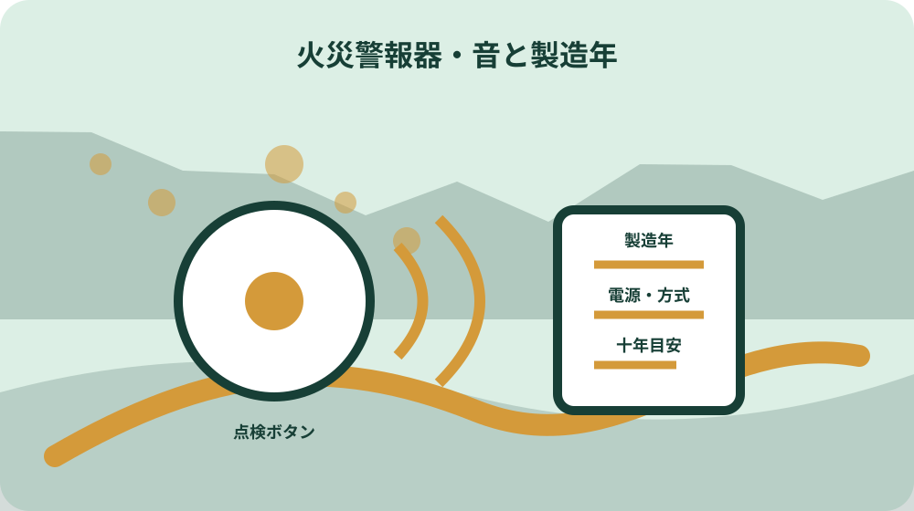
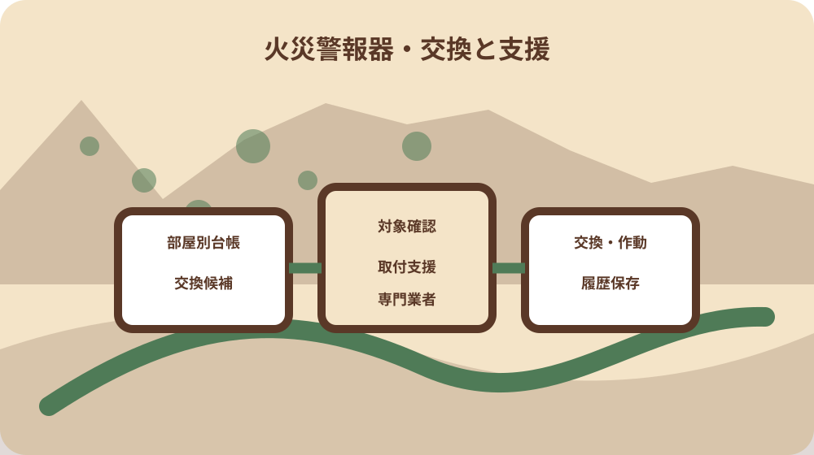

先に結論を確認する
この記事の答え：寝室と階段を歩き、機器へ部屋番号を付けます。設置場所、製造年または設置時期、感知方式、電源、作動確認、交換候補理由を一行ずつ残してください。
森町で最初に照合する条件：森町・袋井市の取付支援は六十五歳以上の人だけで構成される世帯が対象であり、購入済み機器の取付け支援として対象可否を確認する。
結論：部屋ごとに設置場所・製造年・作動音・交換判断を一行で残す
この記事の答えは、住宅用火災警報器を家全体で一括管理せず、寝室、階段、台所など設置場所ごとに一行を作ることです。各行へ本体の位置、製造年または設置時期、電源、点検時の反応、交換候補かどうかを書けば、家族が同じ機器を確認できます。
森町の公式案内は、設置から十年を目安に本体交換を勧めています。十年は故障日を確定する期限ではありません。設置時期が不明なら、本体表示や購入記録を探し、分からない機器は『時期不明』として点検と相談の対象へ回します。
消防庁は、基本的な設置場所として寝室と、寝室がある階の階段上部を示しています。ただし住宅の階数や地域の条例で必要箇所が変わり得るため、自宅の部屋構成を先に描き、管轄消防へ確認する項目を残します。
台帳の目的は、音が鳴ったときに慌てて製品名を探すことではありません。平常時に部屋と機器を対応させ、作動確認、手入れ、交換、取付支援のどれが必要かを家族で判断できる状態にすることです。
一枚の台帳にまとめる際も、住宅ごとに表を分けます。自宅と実家、母屋と離れを同じ表へ連続して書くと、同じ『二階寝室』が重なります。住所、建物名、確認した玄関を表紙へ書き、建物単位で番号を振ります。
森町と袋井消防本部の案内を二つの役割に分けて読む
森町の『住宅用火災警報器の交換について』は、既存住宅を含む住宅での設置経緯と、古い機器では電子部品の寿命や電池切れにより感知できない場合があることを説明しています。ここは交換候補を選ぶ根拠として使います。
一方、『住宅用火災警報器の取り付け支援について』は、機器の性能説明ではなく、購入した機器を自力で取り付けにくい世帯への支援案内です。交換時期の判断と、実際に取り付ける人の確保を別の欄にすると取り違えません。
取付支援の対象は、森町または袋井市に住み、六十五歳以上の人だけで構成される世帯と案内されています。機器を無償でもらえる制度とは書かれておらず、購入済みの警報器の取付けまたは取替えを手伝う案内として読みます。
消防庁のQ&Aは、設置場所、感知方式、電源、点検、清掃など全国共通の基本確認に使います。森町の支援対象や問い合わせ先は町ページを優先し、全国情報から町独自の受付条件を作らないことが大切です。
三つの情報源は確認日も分けて残します。町の支援条件、町の交換案内、消防庁の機器説明は更新主体が異なります。後日見直すときは一つのページだけを再確認せず、台帳の各欄がどの資料に基づくかをたどります。
寝室と階段を先に歩き、警報器の位置を平面図へ落とす
最初の現地確認では、就寝に使う部屋を一室ずつ数えます。普段は物置でも、家族が泊まるときだけ寝室にする部屋があれば、その使い方も書きます。部屋名だけでなく一階北側、二階東側など位置を添えると、離れて暮らす家族にも伝わります。
次に、寝室がある階から下へ通じる階段の上部を確認します。消防庁の説明では一階の階段を除く基本例が示されていますが、住宅の階数などで他の階段が必要になる場合があります。図だけで自己判断せず、不明点を管轄消防へ尋ねます。
台所は煙や湯気が出るため、寝室と同じ機器を同じ位置へ付ければよいとは限りません。町ページは交換目安を示し、消防庁は煙式と熱式の特徴を説明しています。現在の機器の方式を写し、交換品の選定は設置条件と一緒に確認します。
平面図には、警報器の丸印へ番号を振ります。たとえば一階寝室をA1、二階寝室をA2、階段をS1とし、本体写真のファイル名にも同じ番号を付けます。写真だけが大量に残り、どの部屋か分からなくなる失敗を防げます。
改装で部屋用途が変わった家では、現在の使い方と図面上の旧名称を並べます。『旧和室、現在寝室』のように書けば、購入時の図面と現地がずれていても同じ場所を指せます。用途変更日は不明でも、確認日だけは必ず残します。

本体表示から製造年・電源・感知方式を写し取る
本体の側面や裏面を安全に見られる範囲で確認し、メーカー名、型式、製造年、電源方式、感知方式を転記します。脚立作業が不安な場合は無理に外さず、見える表示だけを書き、残りは取付支援や専門業者へ相談する欄に回します。
製造年と設置年は同じとは限りません。購入時の箱、保証書、領収書、住宅の引渡し書類に日付があれば、何の日付かを分けて記録します。根拠がない推定年を確定値として書くより、『二〇一六年以前の可能性』のように幅を残す方が安全です。
消防庁は煙式と熱式、電池式と家庭用電源式、単独型と連動型があることを説明しています。これらは一つの分類ではありません。感知方式、電源、警報の連動という三つの列を用意すると、機器の特徴を混ぜずに比較できます。
型式適合検定の合格表示や旧来の表示を見つけた場合も、表示だけで交換不要とは決めません。設置時期、作動確認、外観、説明書の指示を合わせ、森町が示す十年目安も踏まえて本体交換の候補を決めます。
表示写真は文字が読める距離で撮り、個人名や住宅書類が写り込まないようにします。暗くて読めない写真を確定根拠にせず、再撮影が必要な欄へ回します。撮影できない位置なら、推測せず専門家確認と記します。
点検ボタンの音を家族と確認し、異常音と区別する
作動確認は、実際の火や煙を近づけるのではなく、機器の点検ボタンや引きひもなど取扱説明書に示された方法で行います。消防庁も定期的に点検ボタンを押すなどして作動確認するよう案内しています。
台帳には『鳴った・鳴らない』だけでなく、確認日、操作方法、聞こえた音や音声、同席者を書きます。高齢者や耳が聞こえにくい家族がいる場合は、別室でも気付けるかを家族で確認し、補助警報装置や連動型の相談材料にします。
機器によっては電池切れや故障を音や光で知らせます。火災警報と異常表示の意味を記憶だけで判断せず、型式に対応する説明書を確認します。音が止まったから解決したとせず、原因と対応を点検行へ残します。
作動しない、表示が読めない、外観に損傷がある場合は、自己流で分解しません。部屋番号、型式、症状、確認日をまとめ、メーカーまたは袋井消防本部予防課など適切な確認先へ相談できる状態にします。
ほこりの手入れと取扱説明書の所在を機器ごとに結ぶ
消防庁は、ほこりが入ると誤作動する場合があるため、定期的な掃除を案内しています。ただし掃除方法は機種によって異なります。水拭きや薬剤使用を一律に勧めず、取扱説明書の手順を確認することが前提です。
説明書が紙で残っていれば、本体番号と同じ付箋を付けます。電子版を探した場合はメーカーの公式ページ、型式、確認日を台帳へ記録します。似た型式の説明書を取り違えると、点検音や電池交換の扱いを誤るおそれがあります。
清掃日は作動確認日と同じでなくても構いません。外観確認、ほこりの除去、作動確認、交換判断を別々のチェック欄にし、実施した作業だけに日付を入れます。未実施を空欄にせず『未確認』と明示すると引継ぎが止まりません。
吹き抜けや高い天井など手が届かない場所は、危険な脚立作業を家族へ引き継がないことが重要です。位置写真と高さの目安を残し、点検や交換を誰へ依頼するかを決めること自体を、その機器の保守記録にします。
設置から十年を目安に、本体交換の候補を分ける
森町は設置から十年を目安に本体交換を勧め、電池だけを替えても他の電子部品の劣化が考えられると説明しています。そのため、十年近い機器を『電池を替えたから継続使用』と自動判定しない欄が必要です。
交換候補表は、設置時期が十年以上、設置時期不明、作動確認に反応しない、損傷や汚れが大きい、説明書上の異常表示がある、という理由を分けます。複数の理由がある場合はすべて残し、交換順を家族で決めます。
本体交換の目安と法令上必要な設置場所は別の論点です。一台を新しくしたことで家全体の配置が適切になったとは限りません。交換時には平面図も見直し、寝室の使い方や階段位置が変わっていないかを確認します。
空き家や季節利用の家でも、使用日数が少ないから電子部品が劣化しないとは断定できません。滞在前の安全確認として、通電状態、電池、作動、設置年を確認し、使用頻度だけで交換候補から外さないようにします。
高齢者世帯の取付支援は対象と依頼方法を先に確認する
森町掲載の取付支援は、購入した住宅用火災警報器の取り付けが難しい高齢者世帯を対象とする案内です。対象世帯か、どの消防署へ連絡するか、訪問前に何を用意するかを電話で確認し、台帳へ回答日と担当を残します。
支援対象の『六十五歳以上の者のみで構成されている世帯』は、家族の年齢と居住実態で確認します。別居家族が所有者であることや、昼間だけ手伝いに来ることを理由に、対象可否を自己判断しないようにします。
取り付ける機器は事前に購入する前提の案内です。必要な感知方式、設置場所、数量、取付面の状態が分からない場合は、購入前に相談事項を整理します。支援申請と商品選定を同じ手続きだと思い込まないことが大切です。
対象外でも、無理な高所作業を家族だけで行う必要はありません。電器店、住宅設備業者、メーカーなどへの依頼候補を記録し、費用、作業範囲、旧機器の扱い、設置後の作動確認を見積り時に尋ねます。
煙式・熱式・単独型・連動型を同じ欄へ混ぜない
煙式は煙を、熱式は周囲温度を手掛かりに警報を発する方式として消防庁が説明しています。寝室や階段室で法令上求められる基本は煙式です。既存機器の方式と、交換候補の方式を別列にして照合します。
単独型は感知した機器だけが鳴り、連動型は設定された他の機器も警報を発します。広い家、二階建て、離れた寝室がある家では、家族がどこで音を聞く必要があるかを平面図に書き、方式を選ぶ相談材料にします。
電池式と家庭用電源式では、停電時や配線、交換作業の確認点が異なります。現在の電源方式を記録せず外観だけで商品を選ぶと、取り付けられない場合があります。埋込型や配線型は専門業者への確認を優先します。
台帳の一行には、感知方式、電源、連動の三欄を設けます。『煙式だから電池式』『十年電池だから連動型』のような誤った組み合わせを避け、製品表示または公式説明書で確認できた内容だけを書きます。

交換後は旧機器の場所と新機器の表示を引き継ぐ
交換後は、旧機器を外した部屋番号、新機器の型式、製造年、設置日、作動確認日を同じ行へ残します。旧機器の記録を消さず、履歴欄へ移すことで、家のどこをいつ更新したかが分かります。
購入レシートや保証書は、家全体で一つの封筒へ入れるだけでなく、機器番号を書き添えます。同じ日に複数台を買った場合も、どの型式をどの部屋へ付けたかが追えるよう、設置後の写真と対応させます。
旧機器の処分方法は、電池の有無や自治体の分別案内、販売店の回収条件で確認します。火災警報器の記事だけから処分区分を断定せず、森町の最新分別案内や購入店へ個別に確認した結果を残します。
交換直後に点検ボタンで反応を確かめ、家族が音を聞ける位置も確認します。設置しただけで完了にせず、平面図、機器台帳、説明書、写真、次回確認日の五点がそろった時点を引継ぎ完了とします。
大石の視点：空き家や実家では点検日より部屋との対応を残す
私、大石浩之は、実家や空き家の安全記録では『点検した』という一語より、どの部屋のどの機器かが分かることを重視します。ここからは森町や消防庁の公式見解ではなく、家族で管理するための実務上の提案です。
不動産の現地確認で天井の機器を写真に撮っても、後から部屋が分からなければ役に立ちません。玄関から順に部屋番号を振り、全景写真、本体写真、表示写真の三枚を同じ番号で保存する方法が扱いやすいと考えます。
売却や賃貸をまだ決めていない家でも、火災警報器台帳は使えます。所有者、居住者、点検する家族、交換を依頼する人を分けて書けば、判断を急がずに安全上の未確認事項だけを減らせます。
家の図面がなくても、方眼紙に部屋と階段の関係を描けば十分です。法令適合を自分で証明する図ではなく、消防や業者へ質問するための現況メモとして使い、回答者と確認日を追記します。
家族用の火災警報器台帳を完成させ、次回確認日を決める
最終表には、部屋番号、用途、警報器位置、感知方式、電源、連動、製造年、設置日、最終作動確認、清掃、交換候補理由、説明書、担当者を並べます。分からない欄を推測で埋めず、未確認のまま次の担当へ渡せる形にします。
家族で確認するときは、交換対象台数だけを先に数えません。寝室と階段の配置確認、古い機器の抽出、高所作業の有無、取付支援対象、商品選定の質問という順に進めると、購入後に設置できない事態を減らせます。
次回確認日は全機器を同じ日に固定しなくても構いません。交換直後の確認、定期的な作動確認、清掃、家族の利用変更を別の予定として残します。寝室の変更や家族構成の変化があれば、日付を待たず配置図を見直します。
今日できる一歩は、寝室と階段を歩き、警報器へ番号を付けることです。高い場所へ無理に上らず、見える範囲の写真と設置場所を記録し、製造年不明や十年超の可能性がある機器を相談候補にしてください。